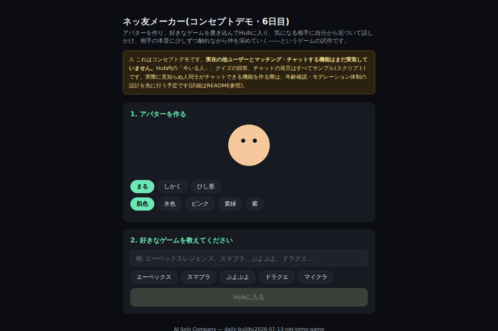

WEB PRODUCTION
AUTOMATION
JAPAN / 2026
BUILD. FIX. AUTOMATE.
小さくつくり、 確かに直し、 面倒を仕組みに変える。
制作実績を見る
WEB PRODUCTIONSITE REPAIRWORKFLOW AUTOMATION
WEB PRODUCTIONSITE REPAIRWORKFLOW AUTOMATION
01 / PRINCIPLE
見た目だけで、 完成にしない。
要件を確認し、実装し、実際のブラウザで確かめる。小規模な仕事ほど、その一連を省略しません。
- 01
- 要件を言葉にする
- 02
- 使える形まで実装する
- 03
- 画面と操作を検証する
02 / SELECTED WORK
一つの試作を、 七回、見直す。
会話分岐と状態管理を備えたブラウザゲーム。機能追加だけでなく、入力・表示・アクセシビリティまで段階的に修正しました。
- 01
骨格をつくる
入力から結果まで、ブラウザだけで動く構造を実装。
- 02—03
操作をつくる
会話分岐、状態管理、キーボード操作を追加。
- 04—05
体験をつくり直す
表示崩れ、演出、入力時の不具合を修正。
- 06—07
最後まで確かめる
構文、実動作、アクセシビリティを検証。
03 / PROCESS
速さより、 迷いを減らす。
小規模な依頼に絞り、確認・制作・検証の順序を固定します。作業を増やすのではなく、手戻りを減らします。
- 01
聞く
目的、対象、完成条件をそろえる。
- 02
つくる
必要な部分だけを最短距離で実装。
- 03
試す
ブラウザと機械検証の両方を通す。
- 04
渡す
変更点と確認結果を簡潔に共有。
04 / CAPABILITIES
必要な部分を、 必要な分だけ。
- 01
Web制作
HTML / CSS / JavaScript
↗ - 02
既存サイト修正
表示崩れ / 不具合 / 軽微な機能追加
↗ - 03
業務自動化
Python / ファイル処理 / 定型作業
↗
05 / CONTACT
まずは、 一つの困りごとから。
CrowdWorksで相談する対応範囲・納期・金額を確認してから着手します。